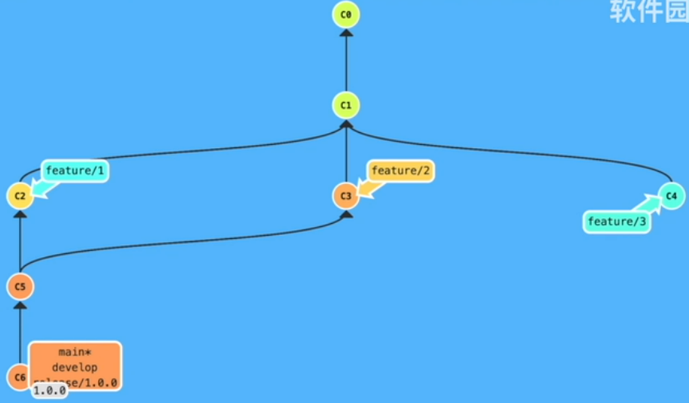
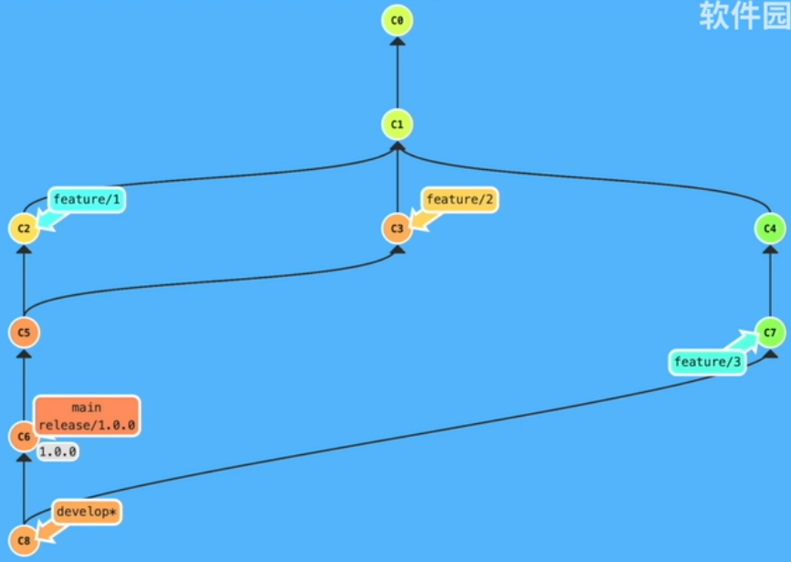
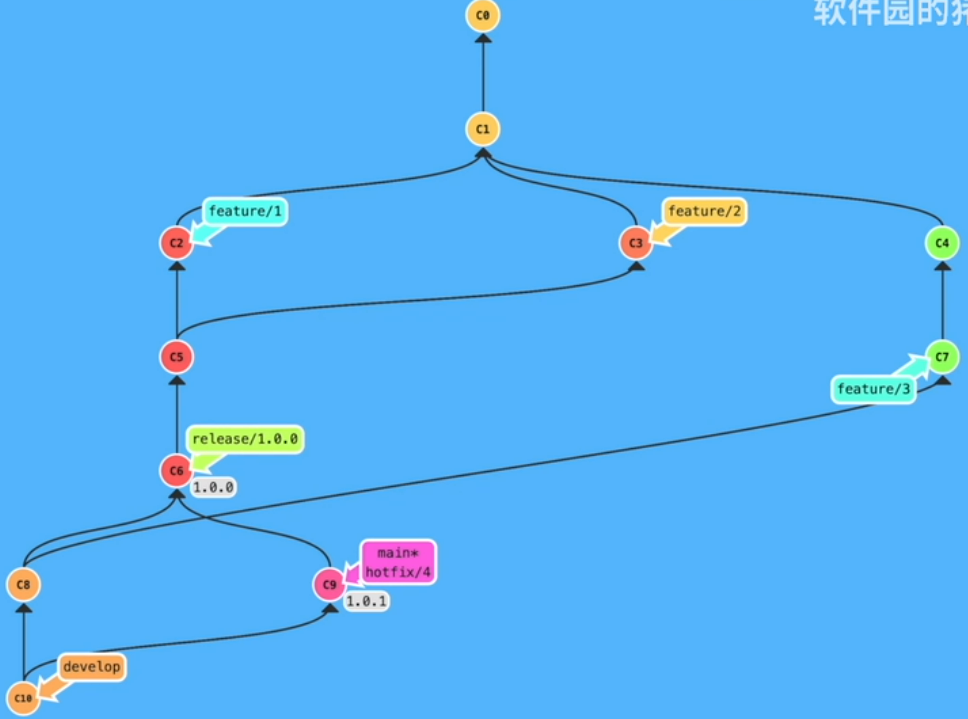
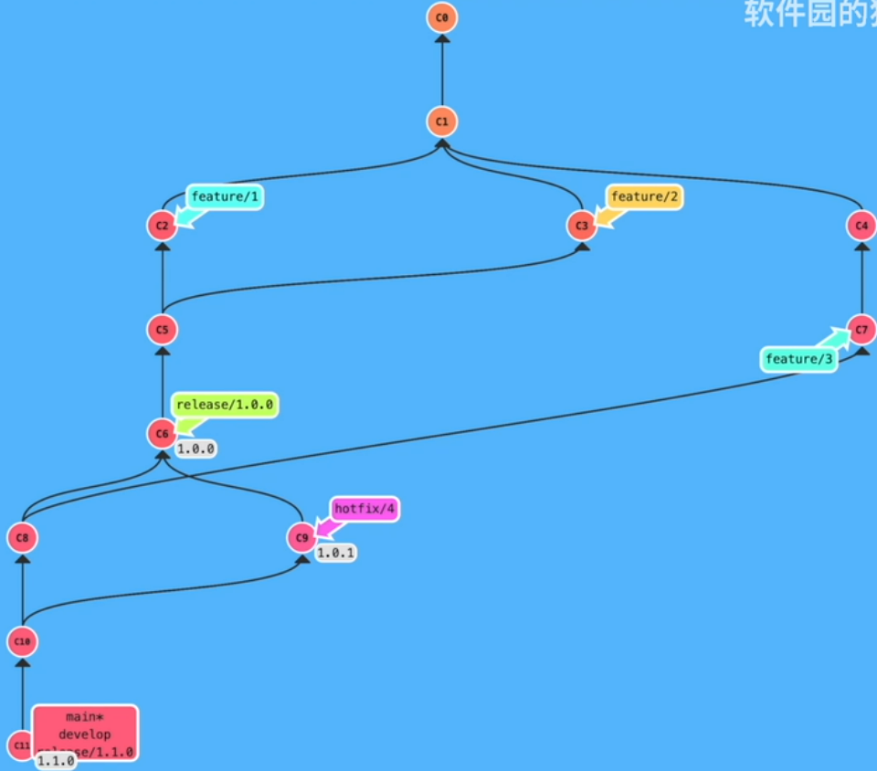

关于 git-flow 的简单介绍，是时候来好好管理我们的项目了，一条 main 交到底的方式并不合适。
参考：
git-flow介绍及开发过程演示
基本的分支类型
| 分支名称 |
说明 |
命名 |
| master |
发布分支 |
master 或者 main |
| develop |
开发分支 |
develop |
| feature |
功能分支 |
feature/FOO-1 |
| bugfix |
修复分支 |
bugfix/FOO-2 |
| hotfix |
紧急修复分支 |
hotfix/FOO-3 |
| release |
发布前的准备工作 |
release/1.0.3 |
额外的老版本的维护分支，一般使用 support，support/1.0.x。
在 learngitbranching 上做下面这些测试
合并两个 feature 上的提交
1
2
3
4
5
6
7
8
9
10
11
12
13
14
15
16
17
18
19
20
21
22
23
24
25
26
27
28
29
30
31
32
33
34
35
36
37
38
39
40
41
42
43
| git branch develop
git checkout develop
git branch feature/1
git branch feature/2
git branch feature/3
git checkout feature/1
# do something
git commit -m "cm"
git checkout feature/2
# do something
git commit -m "cm"
git checkout feature/3
# do something
git commit -m "cm"
# 合并 feature/1 和 feature/2
git checkout develop
git merge feature/1
git merge feature/2
# 基于 develop 进行一个发布
git branch release/1.0.0
git checkout release/1.0.0
# 在 release 做一些发布的准备工作
# do something
git commit -m "to release"
# 切换到 develop 把 release 上做的修改合并到 release 上
git checkout develop
git merge release/1.0.0
# 一定要从从 release 上进行发布
# 而不是从 develop 上发布
git checkout main
git merge release/1.0.0
# 发布之后在 main 上做一个 tag
git tag 1.0.0
|

合并第 3 个 feature 上的提交
1
2
3
4
5
6
7
8
| git checkout feature/3
git commit -m "cm"
# 合并到 develop
git checkout develop
git merge feature/3
# do more things
|

在 1.0.0 进行一个紧急修复
1
2
3
4
5
6
7
8
9
10
11
12
13
14
15
16
17
| git checkout 1.0.0
git branch hotfix/4
git checkout hotfix/4
# do something
git commit -m "fix"
# 从 hotfix 上合并到 develop 和 main 并进行发布
git checkout develop develop
git merge hotfix/4
# 合并到 main 并发布
git checkout main
git merge hotfix/4
# 发布
git tag 1.0.1
|

在 develop 上发布新版本 1.1.0
1
2
3
4
5
6
7
8
9
10
11
12
13
14
15
16
17
| git checkout develop
git branch release/1.1.0
git checkout release/1.1.0
# do something
git commit -m "cm"
# 合并到 develop
git checkout develop
git merge release/1.1.0
# 合并到 main
git checkout main
git merge release/1.1.0
# 发布
git tag 1.1.0
|
最终的效果
